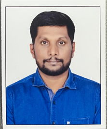

I build AI agents that streamline repetitive infrastructure tasks and improve engineering workflows.
12 years in IT and 8+ years in DevOps, turning complex delivery and infrastructure problems into repeatable systems.

Over 12 years in IT, including 8 years in DevOps, with experience across software delivery, cloud infrastructure, and operational reliability. I build dependable platforms and automate complex engineering environments using AWS, Azure, GitHub Enterprise, Kubernetes, and Infrastructure as Code. I have hands-on experience with AWS services including EC2, S3, IAM, VPC, Lambda, and CloudFormation, and Azure services including AKS, Azure DevOps, Key Vault, App Service, Storage, and ARM/Bicep.
Focused on solving challenges across the end-to-end software delivery lifecycle. Led the migration of 5,000+ repositories and 500+ pipelines, developed reusable GitHub Actions and self-service infrastructure, and delivered automation that saved approximately 900 hours while reducing a 500-day delivery effort to 150 days. I drive consistent, repeatable, and scalable delivery practices that simplify operations for engineering teams.
I build AI agents that automate repetitive infrastructure tasks, streamline engineering workflows, and improve operational efficiency. I work with approved-LLM, Agentic AI, and RAG solutions using LangChain and LangGraph for source-code migration, repository onboarding, CI/CD modernization, validation, and documentation, alongside Terraform, Bicep, ARM, CloudFormation, Jenkins, Azure Pipelines, Python, Bash, and PowerShell.
The stack I use to build and operate infrastructure day to day.
Enterprise DevOps, platform modernization, and migration programs that turn delivery friction into measurable capacity.
Leading enterprise DevOps across AWS and Azure, standardizing CI/CD, Infrastructure as Code, GitHub Enterprise governance, and Kubernetes platform delivery.
Administered enterprise database platforms and the underlying Linux and Windows environments, with a focus on reliability, automation, and operational readiness.
Selected programs where platform engineering, automation, and AI created concrete delivery leverage.
Led the enterprise-wide migration from TFS, CVS, SVN, Bitbucket, and Azure Repos to a governed GitHub Enterprise platform. Defined repository models, naming standards, branch protection, access controls, and code ownership. Built GitHub Actions automation for repository provisioning, history preservation, and validation, solving RPC limits and Git LFS handling for large binaries. This enabled repeatable migration at scale with minimal manual effort and served as the foundation for enterprise GitHub adoption.
Modernized enterprise CI/CD by migrating pipelines from Jenkins and Azure Pipelines to GitHub Actions across product teams. Designed secure workflows for build, test, security scanning, artifact publishing, and deployment across AWS and Azure. Built reusable and composite actions to remove duplicated logic, accelerate service onboarding, and enforce consistent standards. Integrated Terraform, Bicep, ARM, and CloudFormation for infrastructure validation and provisioning, with automated quality and security gates for reliable self-service delivery.
Deployed and operated Kubernetes platforms for containerized workloads across development, staging, and production. Standardized Helm templates and environment-specific configuration, implemented HPA and resource-based scaling, and configured pod scheduling, node placement, requests, limits, probes, and rolling updates for stable operations. Configured Ingress, services, and load balancing, monitored cluster health, tuned capacity for variable workloads, and used kubectl to troubleshoot pending pods, CrashLoopBackOff, image-pull, networking, scaling, and availability issues in partnership with application and architecture teams.
Contributed to enterprise AI initiatives by onboarding approved Large Language Models and building engineering automation that combines DevOps practices with Generative AI. Designed Agentic AI agents and Retrieval-Augmented Generation pipelines with LangChain, LangGraph, and vector databases for source-code migration, repository onboarding, CI/CD modernization, validation, and documentation generation. Kept automation aligned with enterprise security and compliance while identifying high-value use cases with engineering teams.
Credentials and professional focus areas supporting cloud platform and DevOps delivery.